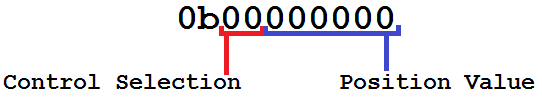

baja-actuator
This is an arduino project that interfaces with the rest of the DriveAI-Platform and actuates the vehicle according to the commands passed to it via serial.
Synchronization
The control section operates asynchronously from the rest of the computer, and has a variable refresh rate. By default, the controller updates at 100Hz. Serial can be sent to the controller at any time, and is collected and applied during the next cycle. At the default refresh rate, this results in around 10-12ms of latency in a worst-case scenario. This is suitably fast for driving at low speeds, and can be made much faster as needed.
Encoding and Transmission
Each time the controller is sent a command, it is in the form of one byte of data. We have written an encoder for said data that provides a balance between raw speed and movement precision. Each packet looks like this:

The first two bits of data indicate which control element is being set. This configuration allows for up to 4 individual controls, which we have assigned as follows: - 0b00 - Stop the engine immediately. - 0b01 - Control steering. - 0b10 - Control acceleration. - 0b11 - Control braking.
The last 6 bits of data represent the position value being written to that control. This translates to an unsigned integer from 0-63. We believe that 64 positions per control is adequate for our current vehicle. It is our intention in the future to increase the precision of these controls for use in larger vehicles. Therefore, the currently established ranges for the controls in hexadecimal are as follows: - 0x00 to 0x3F - Stop the engine immediately. - 0x40 to 0x7F - Control steering, with 0x40 being extreme left, and 0x7F being extreme right. - 0x80 to 0xBF - Control acceleration, with 0x80 being full throttle, and 0xBF being zero throttle. - 0xc0 to 0xFF - Control steering, with 0xC0 being no braking, and 0xFF being full power braking.